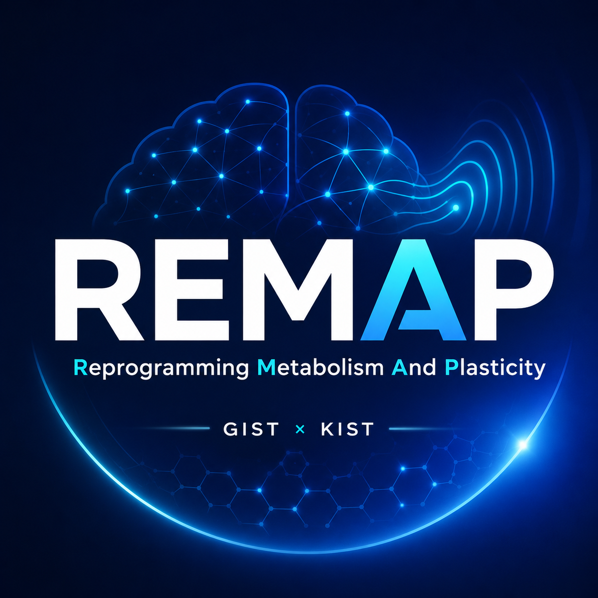
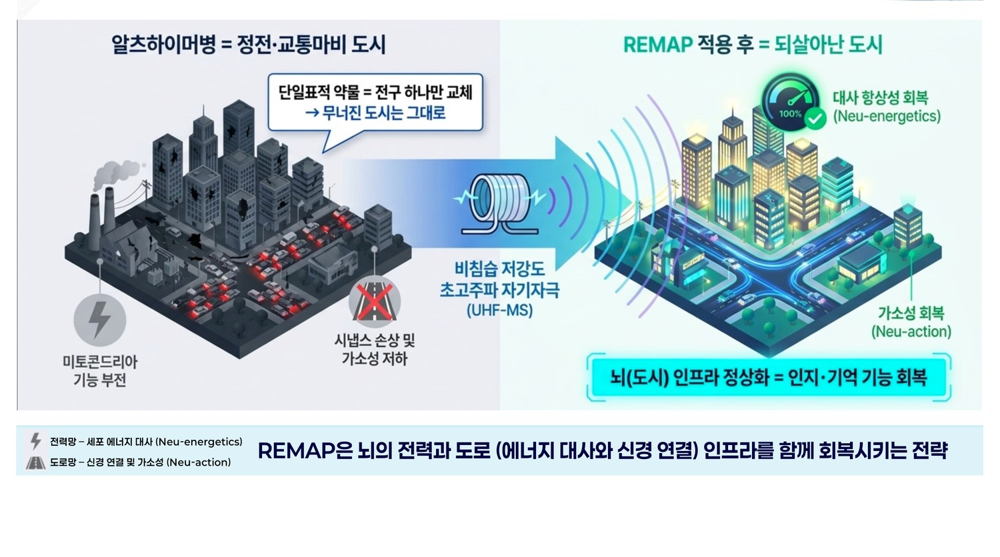
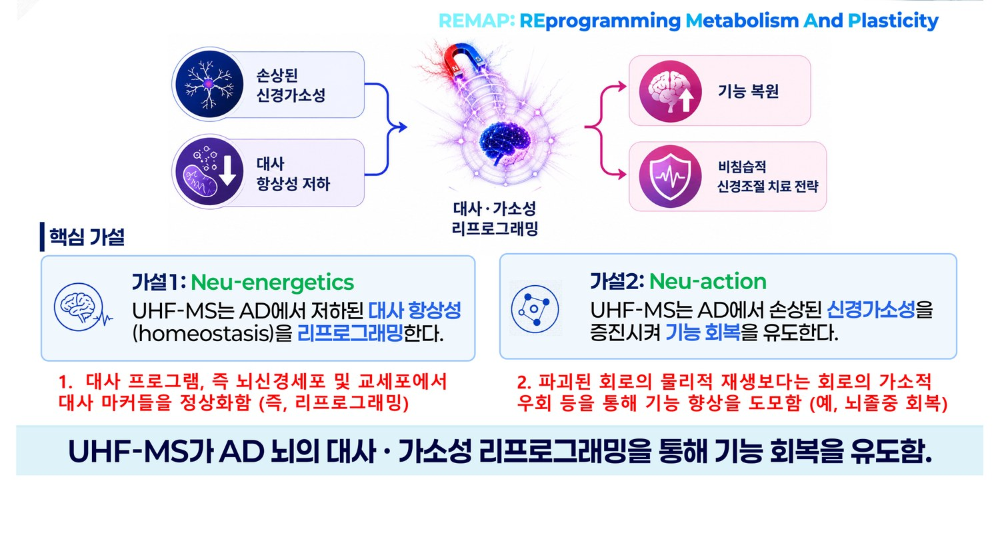
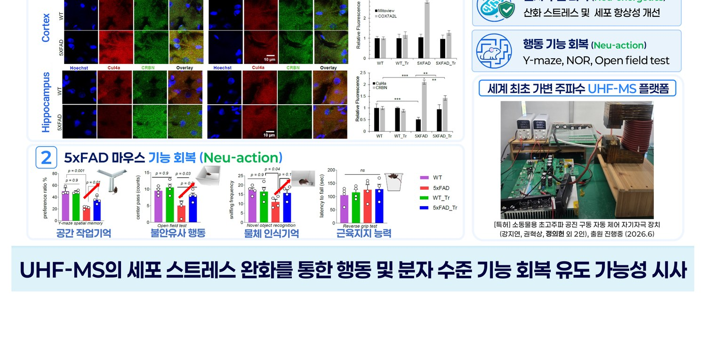

Neu-energetics
UHF-MS reprograms disrupted metabolic homeostasis in the Alzheimer's brain — restoring mitochondrial function, reducing oxidative stress, and rebalancing astrocyte metabolism.

REMAP Fellowship GIST × KISTREMAP (REprogramming Metabolism And Plasticity) is recruiting up to five postdoctoral researchers to lead independent projects at the intersection of non-invasive brain stimulation, metabolic reprogramming, and neuroplasticity in Alzheimer's disease — jointly operated by GIST and KIST under the InnoCORE Program.
REprogramming Metabolism And Plasticity through ultra-high-frequency magnetic stimulation
We are developing ultra-high-frequency magnetic stimulation (UHF-MS) — a novel, non-invasive neuromodulation technology operating at 10–400 kHz with low-intensity (5–10 mT) magnetic fields. Unlike conventional TMS/rTMS, which directly depolarizes neurons, UHF-MS targets sub-threshold metabolic and glial pathways, opening a new paradigm for treating Alzheimer's disease.
REMAP is a multi-year research initiative funded by the InnoCORE Program of the Korean Ministry of Science and ICT, operated jointly by GIST (Gwangju Institute of Science and Technology) and KIST (Korea Institute of Science and Technology). Fellows lead independent projects across stimulation engineering, mechanism discovery, and translational biomarker development, supported by two world-class research environments.

UHF-MS reprograms disrupted metabolic homeostasis in the Alzheimer's brain — restoring mitochondrial function, reducing oxidative stress, and rebalancing astrocyte metabolism.
UHF-MS enhances impaired neuroplasticity — strengthening synaptic connections, restoring neuron–glia interactions, and recovering cognitive and behavioral function.

UHF-MS already shows molecular- and behavioral-level functional recovery via cellular stress relief.

Five independent research tracks (A–E), multiple GIST–KIST mentorship, and seed funding await. Applications are reviewed on a rolling basis.